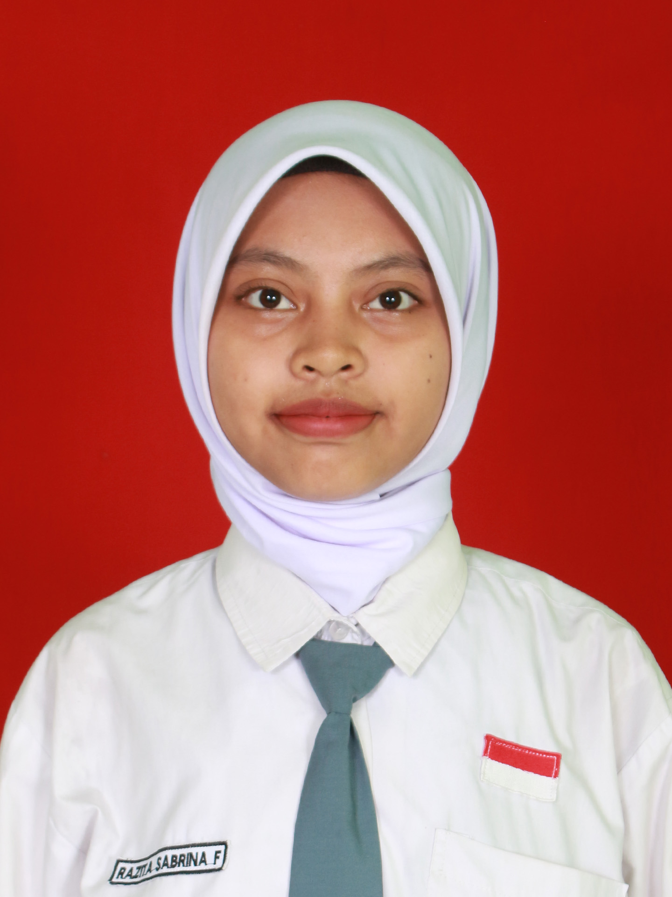

Belajar membangun website dari nol dan senang terlibat di berbagai kegiatan organisasi. Selalu ingin belajar hal baru di dunia teknologi.
Aku siswa kelas Rekayasa Perangkat Lunak di SMKN Takeran dengan minat besar di bidang pengembangan web. Terbiasa membangun tampilan dan fungsi dasar website menggunakan HTML, CSS, dan PHP, serta aktif mendukung pekerjaan administratif dan desain menggunakan Microsoft Office dan Canva. Aku senang bekerja dalam tim, aktif di organisasi sekolah dan masyarakat, dan selalu terbuka untuk belajar hal baru.
Saat ini aku sedang menjalani PKL di PT Pragma Informatika, tempat aku belajar langsung bagaimana rasanya terlibat dalam proyek pengembangan aplikasi web yang sesungguhnya — mulai dari memahami kebutuhan pengguna, menyusun tampilan antarmuka, sampai membantu proses coding di balik layar. Pengalaman ini bikin aku makin yakin kalau dunia pengembangan web adalah hal yang ingin aku dalami lebih jauh ke depannya.
Di luar urusan sekolah dan magang, aku juga cukup aktif berorganisasi — mulai dari memimpin ekstrakurikuler PMR, ikut kegiatan FORPIS tingkat kabupaten, sampai membantu di seksi humas Karang Taruna RT tempat aku tinggal. Bagi aku, hal-hal ini ngajarin banyak soal komunikasi, tanggung jawab, dan kerja sama dengan orang lain — yang menurutku sama pentingnya dengan skill teknis.